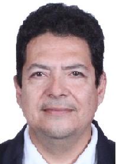

About Me
 My name is David Antonio Fajardo Ponce. I am from Honduras. I served as full-time missionary of the Church of Jesus Christ of Latter-Day Saints in Guatemala, according to the prophet Joseph Smith, part of the Land of Nephi. I am a Science teacher. I am single, with a son who lives with me. My son is facing a great challenge, because the socialist government of Honduras has not given the High School Certificate to him, even though my son did approved all the assignments, and the University Admission Exam, since 2023, and he is not yet studying at the university because of that, due to the authoritarian government which is ruling in our country, similar to the Gadianton robbers.
Honduras
 Honduras is a country located at the north part of Central america,
bordering with the Caribbean Sea. Even though it has many natural resources,
the current socialist government is destroying the exporting industry, such as the
shrimp industry, located in the mangroves at the Gulf of Fonseca, in the Pacific Ocean,
where huge amounts of shrimps were produced to export to Taiwan, but, at the present,
because the socialist government decided to cease the trading with Taiwan, to
prefer trading with Communist China, the shrimp industry declined and the poverty
increased in the country.
Honduras is a country located at the north part of Central america,
bordering with the Caribbean Sea. Even though it has many natural resources,
the current socialist government is destroying the exporting industry, such as the
shrimp industry, located in the mangroves at the Gulf of Fonseca, in the Pacific Ocean,
where huge amounts of shrimps were produced to export to Taiwan, but, at the present,
because the socialist government decided to cease the trading with Taiwan, to
prefer trading with Communist China, the shrimp industry declined and the poverty
increased in the country.